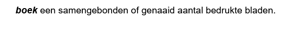

Definities in ReSpec
Note In dit stuk afbeeldingen opnemen waarin je het resultaat in ReSpec kunt zien. Daarvoor graag NL-ReSpec-GN-template aanvullen.
TODO Het zou wel heel leuk zijn om een link met NL-SBB te leggen.
Intro
Een belangrijk onderdeel van een dataspecificatie is de definitie van begrippen. Steeds vaker leggen we bij Geonovum begrippen vast in een begrippenkader. Idealiter zouden we voor de definitie van een begrip altijd daarnaar willen verwijzen. Op dit moment is dat om meerdere redenen nog niet mogelijk. Op deze plek leggen we uit hoe we nu een definitie opnemen.
Definitie van een begrip opnemen in specificatie
De meeste begrippen in een dataspecificatie worden gedefinieerd in het hoofdstuk Gegevensdefinitie. Imvertor genereert dit hoofdstuk automatisch op basis van het model in EA. Deze beschrijving richt zich alleen op de hoofdstukken die met de hand geschreven worden.
De beschrijving in de handleiding van ReSpec is heel summier. Hierdoor pas je het snel en eenvoudig toe, maar het leidt niet vanzelfsprekend tot éénduidig gebruik. Er zijn namelijk verschillende manieren waarop je als gebruiker een begrip met definitie kunt opnemen:
- inline
- losse regel
- lijst
Binnen Geonovum willen we dit meer kaderen. Daarnaast hebben we aanvullende eisen ten aanzien van de weergave.
Warning Blokweergave en 'normale' weergave niet door elkaar gebruiken. Als je het script gebruikt gaat dat niet goed. Dat kan aangepast worden, maar het is bovenal niet wenselijk om verschillende stijlen in één document toe te passen.
Weergave
ReSpec toont een gedefinieerd begrip door de term schuin en dikgedrukt weer te geven. Deze styling is niet voor elk doeleinde geschikt. Voor inline- en lijstweergave werkt dit prima, maar als losse regel weer niet. Daar mist styling. Toch is dat soms wenselijk, zoals in het MIM-document. Hiervoor is een aanvulling gemaakt op ReSpec, die je kunt gebruikern door [nog invullen].
Volgens ReSpec
<dfn>boek</dfn>een samengebonden of genaaid aantal bedrukte bladen.Resultaat

Gebruik van definitie
Wil je naar een gedefinineerd begrip verwijzen gaat dat zo: <a>boek</a>`` of[=boek-]`
Aanvullende styling
wrap een definitie in een aside met attribute class="definition"
<aside class="definition">
<dfn>papier</dfn>stof om te beschrijven of bedrukken, uit vezelachtige
stoffen, hout, lompen, stro enz. vervaardigd
</aside>Resultaat
[afbeelding opnemen]
Warning Een begrip mag maar één keer voorkomen; je kunt een term niet op twee verschillende manieren definiëren.
Warning Hier graag zoveel mogelijk één lijn in trekken. Graag voorbeelden van hoe dat in huidige documenten zit.
Verwijzing maken naar gedefinieerd begrip
Als je op andere plekken in je document wilt verwijzen naar een gedefinieerd begrip, dan kan dat eenvoudig door het begrip tussen <a></a> te zetten, bijv: <a>boek</a>. Houd als richtlijn dat je alleen de eerste keer dat een term in een alinea voorkomt een verwijzing maakt. Dit voorkomt een overdaad aan verwijzingen in de tekst. Een verwijzing naar een term werkt in alle gevallen hetzelfde.